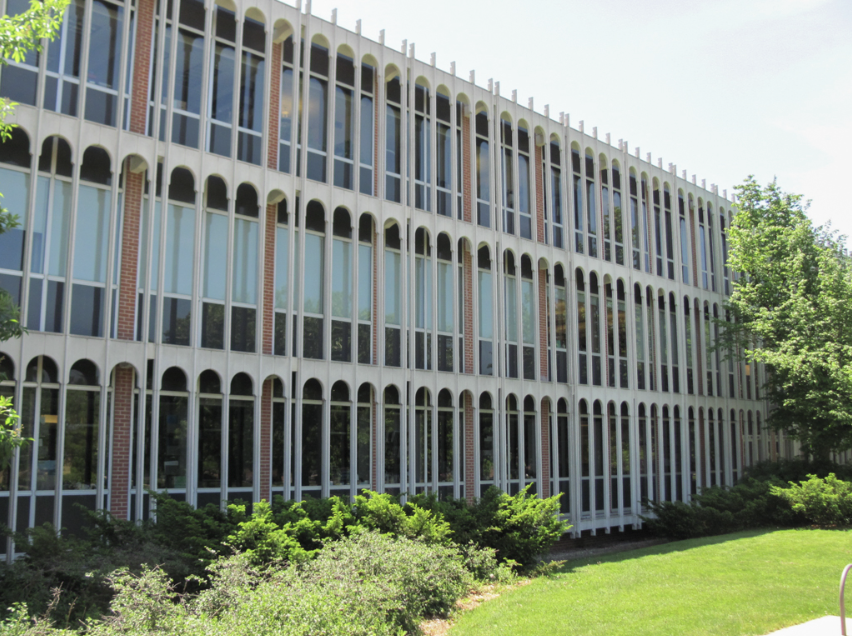
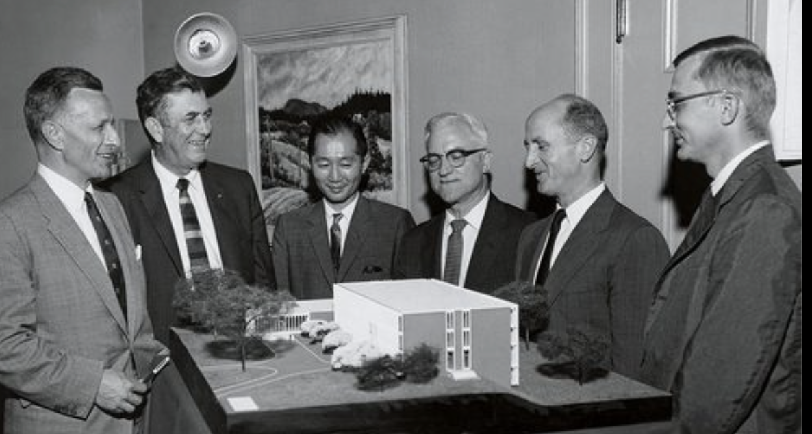

Olin Hall of Science was designed by famous architect Minoru Yamasaki in 1961. In line with Yamasaki’s Humane Modernism aesthetic philosophy, Olin is a modernist box decorated with concrete grillwork to add texture to the design. There are plenty of windows to bring natural light forward - something Minoru would continue in his addition to Myers' 4th floor. Olin is part of the "Modern" era.


A photograph of Minoru displaying his model of Goodhue to Carleton. ^